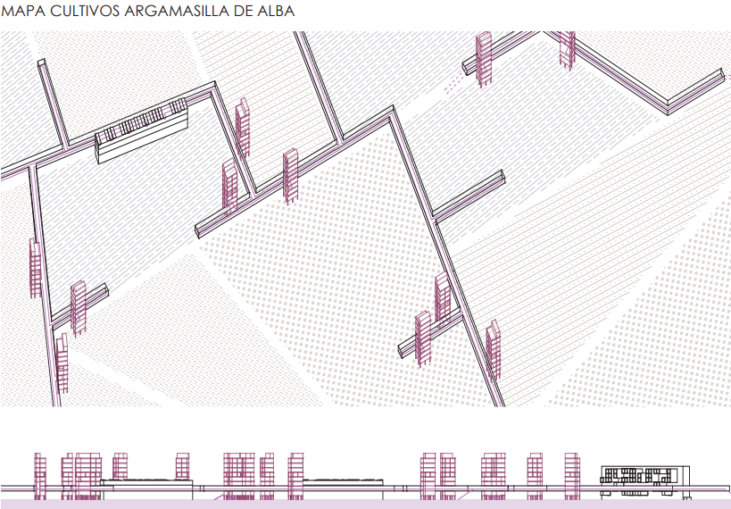
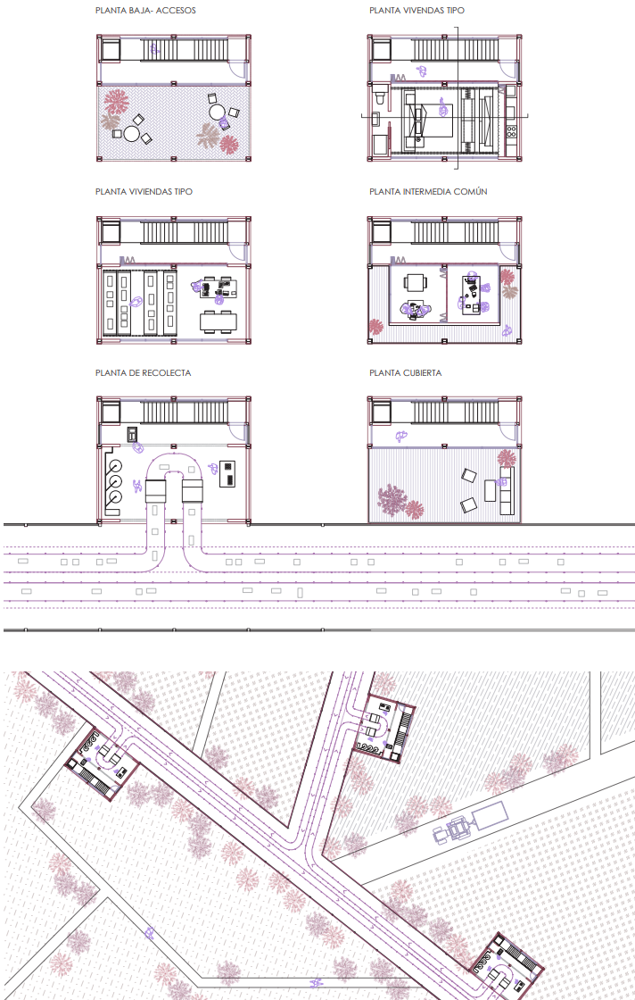

Galería Vertical


Este proyecto combina la agricultura y el arte en una torre de diez plantas donde los artistas experimentan con pigmentos de uva para crear obras, conectando con la tradición vitivinícola local. Las primeras plantas se destinan a la recolección y almacenamiento, mientras que las superiores albergan viviendas, talleres y espacios de ocio. La estructura metálica, con vigas de acero y forjados unidireccionales, permite espacios flexibles optimizados mediante mobiliario móvil y plegable. El diseño busca minimizar la ocupación del terreno para no interferir con los viñedos, maximizando eficiencia y adaptabilidad del espacio. :contentReference[oaicite:0]{index=0}